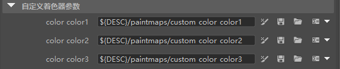
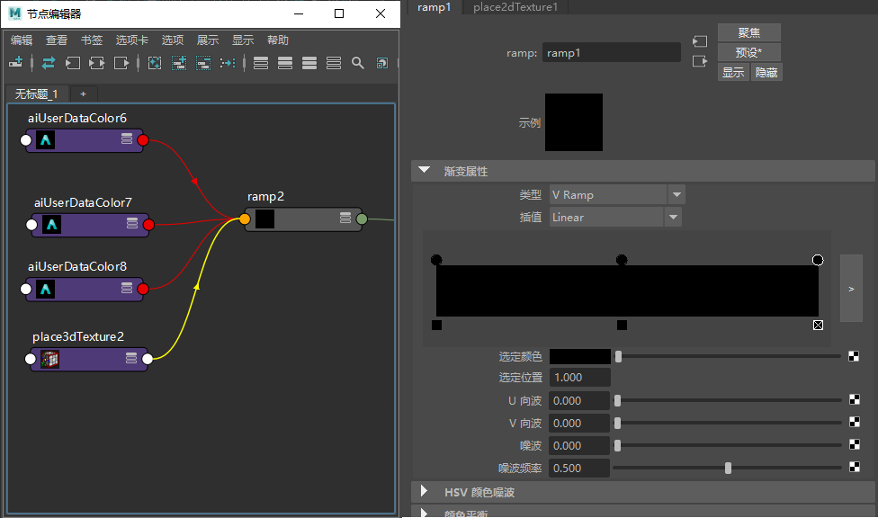

本简短教程介绍了如何添加具有 XGen 样条线的用户数据。请注意，XGen 中的自定义属性与 MtoA 中的自定义属性并不相同。
进行纹理处理时，您将需要在 XGen 窗口的“自定义着色器参数”(Custom Shader Parameters)中创建参数（它们将存储在 .xgen 文件中）。渲染 XGen 程序时，XGen 将读取该文件，并在曲线节点上创建 Arnold 用户数据。
您可在 XGen 中创建不同的颜色“自定义着色器参数”(Custom Shader Parameters)（您可以绘制）。

然后，将渐变着色器用于头发颜色，并将这些颜色指定给渐变的不同级别。
